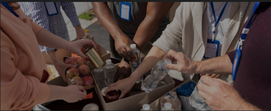

Bem-vindo á Igreja Metodista de Morro Agudo
A Igreja Metodista de Morro Agudo é uma comunidade cristã acolhedora e vibrante, comprometida com a fé em Jesus Cristo e com o serviço ao próximo. Situada no coração de Morro Agudo, nossa igreja se dedica a ser um lugar de encontro, adoração e crescimento espiritual.

Nossos Ministérios
Protegidos
Um espaço dedicado aos jovens, onde podem crescer em fé, desenvolver amizades sólidas e se envolver em atividades que fortalecem seu compromisso com Cristo. Reuniões dinâmicas, eventos especiais e projetos de serviço são apenas algumas das formas de participação.
Ministério de Louvor
A música é uma parte vital de nossa adoração. Nosso ministério de louvor reúne talentosos músicos e cantores dedicados a liderar a congregação em momentos de adoração sincera e inspiradora. Envolva-se e contribua com seus dons musicais.

Ministério de Oração
Acreditamos no poder da oração para transformar vidas e situações. Nosso ministério de oração se dedica a interceder pela igreja, pela comunidade e por necessidades específicas. Participe de nossas reuniões de oração e sinta o poder transformador da fé.
Ministério de Ação Social
Comprometidos com o amor ao próximo, nosso ministério de ação social trabalha para atender às necessidades da comunidade local. Através de campanhas de arrecadação, projetos de assistência e eventos de apoio, buscamos fazer a diferença na vida das pessoas ao nosso redor.
Ministério de Infantil
Nosso ministério infantil é um espaço seguro e alegre onde as crianças podem aprender sobre o amor de Deus de maneira divertida e envolvente. Oferecemos atividades lúdicas, histórias bíblicas, músicas e artesanato, tudo pensado para ajudar na formação espiritual dos pequenos.

Nossos Horários de Culto de Adoração a Deus
-
Grupos Pequenos:
Terça às 19h30 -
Culto da Família:
Quarta às 19h30 -
Reunião de Oração:
Sexta às 19h30 -
Culto de Jovens e Juvenis:
Sábado às 19h30 -
Escola Bíblica Dominical:
Domingo às 09h -
Culto de Adoração:
Domingo às 19h

Conecte-se Conosco
Preencha os Dados do formulário abaixo para que possamos entrar em contato com você!